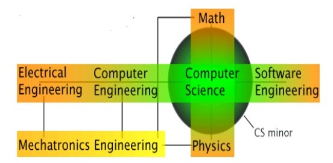

Introduction
The rise of information technology or IT has profoundly affected modern
society. Consequently, computers have become devices of daily use. In this paper,
the need of computer science education will be reflected on. The analysis will
focus on the current situation of today’s society, where IT and
telecommunications are playing a crucial role. World Wide Web and advanced IT
tools have created new opportunities before computer science. So computers can
be considered as intricately interacting with human social processes, where
learning needs are diversifying everyday.
However, in a greater social context of general education, understanding
the special needs of computer science education is not easy. Conventionally,
educational processes are oriented toward an instructions-based approach
(Computer Science Education in the 21st Century, 2012). However, in the case of
computer science, only instructions alone cannot suffice the purposes of the
course. Laboratory-based exercises are necessary, and the student has to
practically handle the computing device. Constructing knowledge on operating
computers is thus the fundamental starting point of computer science learning.
Contextually, in this paper, social perspectives on general learning as well as
studying computer science will also be detailed.
Analysis
Computers are being used ubiquitously in different organizations including universities, hospitals, businesses, etc. Wireless technologies, coupled with Internet and mobile devices, are continuously expanding the scope of computer science (see Figure – 1). So, if somebody does not have the capability of operating computer systems, then life will become considerably difficult for them. For example, daily activities like online shopping, email communication, word processing, etc. are not possible without using computers. Consequently, knowledge of computer science has become a must .

But how can we achieve the adequate levels of knowledge on computers
(and computer science) in today’s world? Unlike the mid 1980s, today’s computer
users do not belong only to the educated scientific community with different
specializations. In a more liberal system of computer science education, even
older adults, housewives, and professionals of other fields would call for a novel
pedagogy (Computer Science Education in the 21st Century, 2012). Consequently,
one can ask that why the learning of computer science and related technologies is
so complex.
“The conventional approach to education remains the instructivist one, in
which knowledge is perceived to flow from experts to novices. This
transmissive view of learning is most evident in the emphasis of lectures,
in the use of textbooks to prescribe reading, and in the future of tutorials
and assessment methods. In addition, first courses in computer science are
typically programming courses and therefore complement the instruction
with laboratory work.” (Computer Science Education in the 21st Century,
2012, p. 53)
Computer science has its own demands as a subject. So computer science
education must shift from an instructivist approach to a knowledge oriented
framework. Today, majority of schools and colleges are capable of providing
computer education. This kind of educational institutions, mostly having their
own IT labs, helps in providing practical knowledge on computers and Internet.
The student community will be greatly benefited if they are provided with smartphone devices, necessary software, and other technical tools too. Ultimately,
knowledge of computer science can prove to be helpful in going ahead to learn
other subjects with the help of enhanced software applications. Therefore,
optimum computer science education will have a twofold benefit. First, the
students will learn to use computing technologies confidently. Second, they will
feel comfortable with computer-based learning systems, where they can be
provided with multimedia lessons on different subjects like languages,
humanities, physical sciences, etc.
If students are trained on computers with “built-in-motivation” (Bennett,
2013, p. 10), then they can develop the necessary levels of both confidence and
knowledge. According to Guzdial & DiSalvo (2013), studying computer science
cannot be regarded as just another subject or topic of research. Computing has
emerged as a kind of literacy, which can be described as an indispensable
groundwork upon which knowledge of other academic subjects can be built.
Further, according to Guzdial & DiSalvo (2013, p. 30), “New developments in
computing education are about bringing computer literacy to everyone, from
young children to working adults to retirees.” In order to exploit the full potential
of informatics in our society, it is a good idea to teach computer science at
whatever level possible This is particularly true in those complex educational
environments where elementary education, secondary education, college
education, etc. are differentiated in an organized manner.
Besides, rise of computer based business information systems have
necessitated deeper knowledge of computers and mobile devices. Banking
transactions are becoming increasingly Web-based and sheer convenience of
usage is encouraging customers to go online. Investment analyses and actual share
market transactions have become almost completely dependent on electronic
transactions and databases. Even many of modern voting systems can now be
integrated within the framework of electronic voting machine, and basic computer
knowledge is a must for operating them. In this way, computer education is
actually lying at the periphery of the computer-based sociotechnical processes in
our society. As a consequence, development of different computer applications
for different fields and purposes has also become an imperative. Fulfilling the
requirements of the newer information systems call for optimum computer
science education. Expansion of use of IT applications across different subject
areas and industries need more skilled computer operators as well as application
developers (Bresnahan et al, 1999). All round training in computer science can
help the students to become winning professional candidates for the future.
Conclusion
Computers have been incorporated in every sphere of one’s social life. Knowledge of computer is becoming a must in today’s social environment. However, there are numerous questions regarding the quality of this knowledge. Firstly, at what level should this knowledge about computers be provided? Secondly, is superficial knowledge just about working with computing devices enough? Thirdly, if the students do not get to know the scientific approach aboutcomputers, then what is the use of their knowledge? There are still other open questions about computer education, where the topic of computer science education is still highly debated.
However, social significance of computer science as a distinct subject is
undeniable. According to Guzdial & DiSalvo (2013), lessons in computer science
can be helpful in creating holistic knowledge about computers. Not only that,
topics like word processing, Web designing, Internet technologies, and IT tools
can be incorporated at various levels of the academic curricula concerned. Due to
the rapid expansion of broadband connectivity and advanced software, various
kinds of computing devices are becoming increasingly popular everyday. In such
a state of affair, taking a course in computer science can be deemed as a critical
necessity of modern education. Every educational institution must have suitable
infrastructure for teaching and studying at least the fundamentals of computer
science.
References
Bennett, R. L. (2013). First steps to computer literacy. Calico Journal, 1, 10-13.
Bresnahan, T. F., Brynjolfsson, E., & Hitt, L. M. (1999). Information technology,
workplace organization and the demand for skilled labour: Firm-level
evidence (No. w7136). London: National Bureau of Economic Research.
Computer Science Canada (2007). 6 Degrees of Computer Science. Retrieved on 21st October 2015 from http://compsci.ca/blog/6-degrees-of-computerscience/ .
Computer Science Education in the 21st Century (2012). New York: Springer
Guzdial, M. & DiSalvo, B. (2013). Computing Education: Beyond the
Classroom. Computer, (9), 30-31.